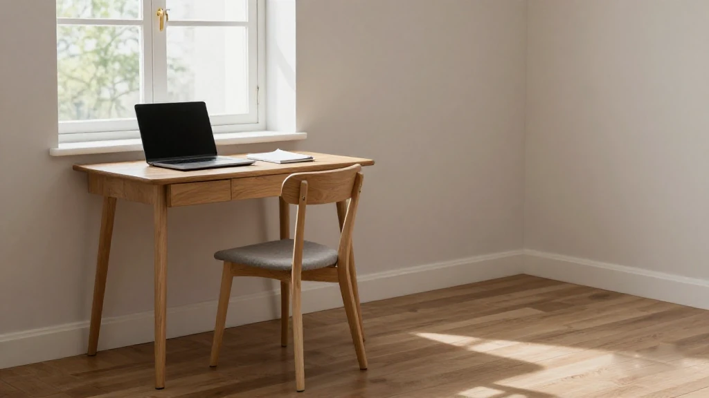
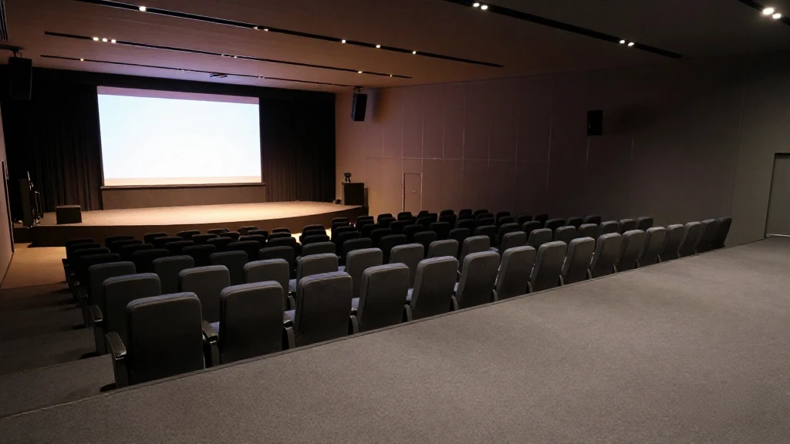
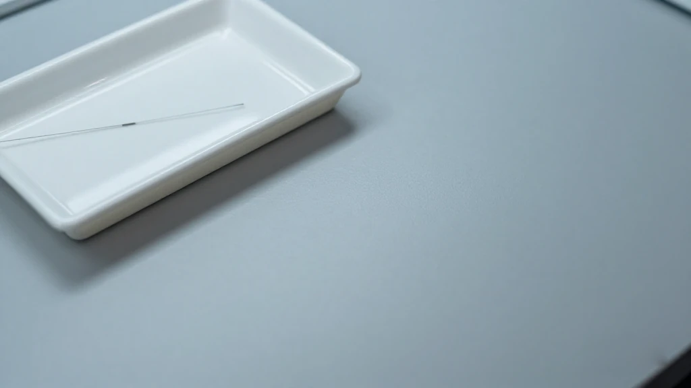
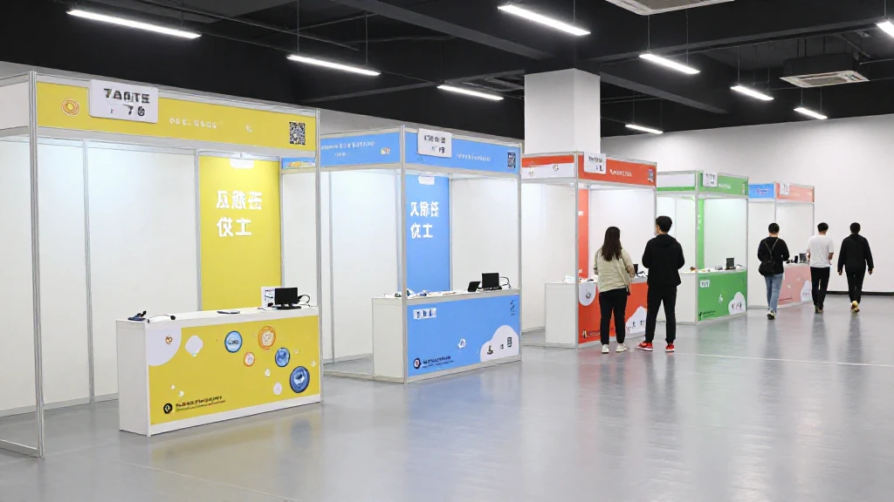

圖片由 AI輔助創作（Z-Image-Turbo）Image by AI (Z-Image-Turbo)
【鄭哥點評】欄目：鄭哥博客點評｜日期：2026-11-03
今日五條，三條喺深圳、兩條喺廣州：一個專收「一人公司」嘅社區、一場區級科創沙龍、一筆數億元融資、一份融資擔保新政、一個港澳台僑青年嘉年華。表面係五件事，底下係同一條線——錢同人，開始有人有意識咁擺埋一齊。

圖片由 AI輔助創作（Z-Image-Turbo）Image by AI (Z-Image-Turbo)
一、番禺「泡芙OPC」：一個月孵出四十幾隊「一人公司」
廣州番禺長隆萬博商務區嘅泡芙OPC社區，行「政府指導、國企支持、市場運營」三方共建。由今年10月以嚟，一個月就孵出超過40個OPC團隊。OPC 即係「一人公司」——一個人、一部電腦、一套AI工具，就當一間公司開工。
社區嘅條件寫得好直接：場地「一免兩減半」，首年租金全免，第二、三年減半；入孵滿一個月、經評估，可以爭取5萬、10萬、30萬分級種子股權投資。社區分四期開放，2027年初進駐嘅OPC團隊有望突破100個。社區負責人歐文講，呢度要托舉嘅係「AI超級個體」。
來源：[https://www.zcwin.com/content/202611/02/709.html](https://www.zcwin.com/content/202611/02/709.html)

圖片由 AI輔助創作（Z-Image-Turbo）Image by AI (Z-Image-Turbo)
二、光明區科創沙龍：把產融對接擺到路演廳
10月30日，光明區科技金融大廈五樓路演廳，主題係「逐浪科學城・有為正當時——創業者的堅守與突圍」。全場四個環節：政策宣講、投融資面對面圓桌、兩場主題分享、自由交流。
分享人係連續創業者楊志超，同頂配（深圳）機器人有限公司創始人白楓。指導單位包括區科技創新局、區人力資源局、鳳凰街道辦事處同區高層次人才服務中心，承辦係區留學人員創業園。
來源：[https://iguangming.sznews.com/content/2026-11/02/content_32205875.htm](https://iguangming.sznews.com/content/2026-11/02/content_32205875.htm)

圖片由 AI輔助創作（Z-Image-Turbo）Image by AI (Z-Image-Turbo)
三、君柔科技：數億元融資，9毫米單入口
深圳君柔科技完成數億元融資。本輪投資方係順為資本、高瓴創投同國家高性能醫療器械創新中心。公司2025年4月成立，一年多之內已經連續完成多輪融資。
佢嘅底子唔係概念：依託中國科學院深圳先進技術研究院劉志遠團隊十幾年嘅柔性電子積累，核心係腦科學同神經接口；自研 NeuroWorm「神經蠕蟲」可移動柔性纖維電極，9毫米單入口微創植入、覆蓋多個腦區。核心技術成果2025年9月發表於《Nature》正刊。新一輪融資即將開啟，深渡資本擔任後續財務顧問。
來源：[https://www.chinaventure.com.cn/news/111-20261102-393859.html](https://www.chinaventure.com.cn/news/111-20261102-393859.html)
圖片由 AI輔助創作（Z-Image-Turbo）Image by AI (Z-Image-Turbo)
四、廣州政府性融資擔保新政：451.66億元之後
廣州市地方金融管理局同市財政局聯合印發《關於推動廣州市政府性融資擔保體系賦能產業高質量發展的實施意見》。文件10月16日印發、10月28日公開，圍繞九個方面出實招：資本規模、國家專項擔保計劃、創業擔保貸款、擔保費降費獎補、多級分險、績效考核、盡職免責等。
截至2026年9月底，廣州政府性融資擔保機構已經為超過2.83萬戶次中小微企業同「三農」主體，提供451.66億元政策性融資擔保服務。文件亦明確引導金融資源流向人工智能、低空經濟、生物醫藥等先進製造業集群。
來源：[https://www.gdjr.gov.cn/gdjr/jrzx/dfjr/content/post_46138.html](https://www.gdjr.gov.cn/gdjr/jrzx/dfjr/content/post_46138.html)

圖片由 AI輔助創作（Z-Image-Turbo）Image by AI (Z-Image-Turbo)
五、坪山「同坪共圳」：26個展位，一個服務站
11月2日發布：2026年坪山區深港澳台僑青年創享嘉年華，主題「同坪共圳・融通港澳」。場內設創享市集26個展位、三大體驗區——青年創業體驗、灣區文化體驗（馬巒窯、糖畫、剪紙）、城市煙火體驗，仲有機器人互動同3D打印。
同期有項目簽約、「灣區合伙人」路演同投融資對接專場，深業興坪、青域基金、亞布力創投同創業團隊面對面洽談。坪山區港澳人員服務站正式揭牌，用「線下專員辦＋線上指尖辦」模式；校地科創成果協同轉化計劃亦同步發布，聯動深圳技術大學技術經理人學院。
來源：[https://www.szpsq.gov.cn/zwgk/mtbd/content/post_13050274.html](https://www.szpsq.gov.cn/zwgk/mtbd/content/post_13050274.html)
圖片由 AI輔助創作（Z-Image-Turbo）Image by AI (Z-Image-Turbo)
六、鄭哥點評
第一，OPC呢條最似做生意嘅底層邏輯。免租係甜頭，「入孵滿一個月先評估」先係真章——一個月之內交唔出一個有人肯付錢嘅東西，就唔好意思。呢個比任何創業課都直接。
第二，三條深圳、兩條廣州，錢嘅流向睇得好清楚。深圳把錢押落「技術源頭」——柔性電極、腦機接口，一押就係十年；廣州把錢押落「人嘅密度」——一人公司、港澳青年，三個月就知邊個跑得出。兩條路都對，但耐性要求完全唔同。
第三，最多人忽略嘅係第四條。政府性融資擔保講到「盡職免責」呢四個字，先算真落地。銀行唔敢貸，好多時唔係唔信企業，係怕日後被問責；免責條款一擺上檯，風險同責任先分得開。呢種文件唔會有新聞感，但佢決定咗幾萬間細廠明年借唔借到錢。
一句到尾：呢五條，冇一條係講「機會嚟喇」。全部係講「門檻降低咗少少」——租金、擔保、審批、對接。門檻降低唔等於你會成功，但至少門口嗰塊石頭，有人幫你搬開咗。搬開之後行唔行得入去，仍然係你自己嘅事。
圖片由 AI輔助創作（Z-Image-Turbo）Image by AI (Z-Image-Turbo)
\[Zheng Ge's Take\] Column: Zheng Ge's blog commentary | Date: 2026-11-03
Five items today — three from Shenzhen, two from Guangzhou: a community built for 'one-person companies', a district startup salon, a nine-figure financing round, a new guarantee policy, and a carnival for young people from Hong Kong, Macao, Taiwan and the diaspora. They look like five things. Underneath they run on one line: money and people are starting, deliberately, to be put in the same room.
圖片由 AI輔助創作（Z-Image-Turbo）Image by AI (Z-Image-Turbo)
1. Panyu's 'Puff OPC': more than forty 'one-person companies' incubated in a month
Puff OPC, a community workspace in the Changlong Wanbo business district of Panyu, Guangzhou, runs on a three-way build: government guidance, state-owned enterprise support and market operation. Since October this year it has incubated more than forty OPC teams in a single month. OPC means 'one-person company' — one person, one computer, one set of AI tools, and the company is open for business.
The terms are written plainly: a rent deal of 'one year free, two years at half'; after a month in residence and an assessment, a project can bid for tiered seed equity investment of 50,000, 100,000 or 300,000 yuan. The site opens in four phases, and by early 2027 the resident OPC teams are expected to pass one hundred. Owen, who runs the community, says what is being held up here is the 'AI super-individual'.
Source: [https://www.zcwin.com/content/202611/02/709.html](https://www.zcwin.com/content/202611/02/709.html)
圖片由 AI輔助創作（Z-Image-Turbo）Image by AI (Z-Image-Turbo)
2. Guangming's startup salon: putting capital and projects in the same room
On 30 October, in the fifth-floor roadshow hall of Guangming district's science and technology finance building, the theme was 'Riding the Science City: the founder's persistence and breakthrough'. Four parts: a policy briefing, a face-to-face capital roundtable, two keynote sharings, and open networking.
The speakers were the serial founder Yang Zhichao and Bai Feng, founder of Dingpei (Shenzhen) Robotics. The guiding units included the district science and technology innovation bureau, the human resources bureau, Fenghuang sub-district office and the district high-level talent service centre; the district overseas returnee pioneer park hosted.
Source: [https://iguangming.sznews.com/content/2026-11/02/content_32205875.htm](https://iguangming.sznews.com/content/2026-11/02/content_32205875.htm)
圖片由 AI輔助創作（Z-Image-Turbo）Image by AI (Z-Image-Turbo)
3. Junrou Technology: a nine-figure round and a nine-millimetre entry
Shenzhen Junrou Technology has closed a round in the hundreds of millions of yuan. The investors this time are Shunwei Capital, Highland Capital and the National Innovation Centre for High-Performance Medical Devices. The company was founded in April 2025 and has already completed several rounds in a little over a year.
The substance is not conceptual: it rests on more than a decade of flexible-electronics work by Liu Zhiyuan's team at the Shenzhen Institute of Advanced Technology, Chinese Academy of Sciences, and its core is brain science and neural interfaces. Its own NeuroWorm is a movable flexible fibre electrode, implanted through a single nine-millimetre entry and covering several brain regions. The core result was published in Nature in September 2025. A further round is about to open, with Shendu Capital as financial adviser.
Source: [https://www.chinaventure.com.cn/news/111-20261102-393859.html](https://www.chinaventure.com.cn/news/111-20261102-393859.html)
圖片由 AI輔助創作（Z-Image-Turbo）Image by AI (Z-Image-Turbo)
4. Guangzhou's new financing-guarantee policy: after 45.166 billion yuan
Guangzhou's local financial administration and the municipal finance bureau have jointly issued 'Implementation Opinions on Enabling High-Quality Industrial Development through the Government Financing Guarantee System'. Issued on 16 October and published on 28 October, it sets out real measures across nine areas: capital scale, the national special guarantee plan, start-up guarantee loans, fee-reduction subsidies and rewards, multi-level risk sharing, performance assessment and due-diligence exemption.
As of the end of September 2026, Guangzhou's government financing guarantee institutions had provided 45.166 billion yuan of policy financing guarantee services to more than 28,300 small and medium enterprises and agricultural entities. The document also directs financial resources towards advanced manufacturing clusters such as artificial intelligence, the low-altitude economy and biomedicine.
Source: [https://www.gdjr.gov.cn/gdjr/jrzx/dfjr/content/post_46138.html](https://www.gdjr.gov.cn/gdjr/jrzx/dfjr/content/post_46138.html)
圖片由 AI輔助創作（Z-Image-Turbo）Image by AI (Z-Image-Turbo)
5. Pingshan's 'same Pingshan, same Shenzhen': twenty-six booths and one service desk
Announced on 2 November: the 2026 Pingshan carnival for young people from Hong Kong, Macao, Taiwan and the Chinese diaspora, under the theme 'same Pingshan, same Shenzhen; connecting Hong Kong and Macao'. Inside were twenty-six booths in a creative market and three experience zones — youth entrepreneurship, Greater Bay Area culture (Maluan kiln, sugar painting, paper cutting) and city life — plus robot interaction and 3D printing.
Alongside it ran project signings, a 'Bay Area partner' roadshow and a dedicated investment matching session, where Shum Yip Hing Ping, Qingyu Fund and Yabuli Venture Capital talked directly with teams. The Pingshan service desk for Hong Kong and Macao residents was formally unveiled, working through an in-person specialist plus an online service; a university-locality technology transfer plan was also released, linked to the technology manager school at Shenzhen Technology University.
Source: [https://www.szpsq.gov.cn/zwgk/mtbd/content/post_13050274.html](https://www.szpsq.gov.cn/zwgk/mtbd/content/post_13050274.html)
圖片由 AI輔助創作（Z-Image-Turbo）Image by AI (Z-Image-Turbo)
6. Zheng Ge's Take
First, the OPC item is closest to the bottom logic of doing business. Free rent is the sweetener; 'assessment after a full month' is the real thing — if you cannot produce something someone will pay for inside a month, then not. That is more direct than any start-up course.
Second, with three items from Shenzhen and two from Guangzhou, the direction of money is easy to read. Shenzhen puts money on the source of technology — flexible electrodes, brain-computer interfaces — and holds it for ten years. Guangzhou puts money on the density of people — one-person companies, Hong Kong and Macao young founders — and knows within three months who can run. Both are right, but they ask for entirely different patience.
Third, the item most people will skip is the fourth. A government guarantee policy only truly lands when it says 'due-diligence exemption'. Banks hold back on lending not because they disbelieve the business, but because they fear being held to account later; once the exemption clause is on the table, risk and responsibility can finally be separated. A document like this has no news feel, but it decides whether tens of thousands of small factories can borrow next year.
One line to finish: not one of these five says 'the chance is here'. All of them say 'the threshold has come down a little' — rent, guarantees, approvals, matching. A lower threshold does not mean you will succeed, but at least someone has moved the stone from the doorway. Whether you walk in afterwards is still your own business.